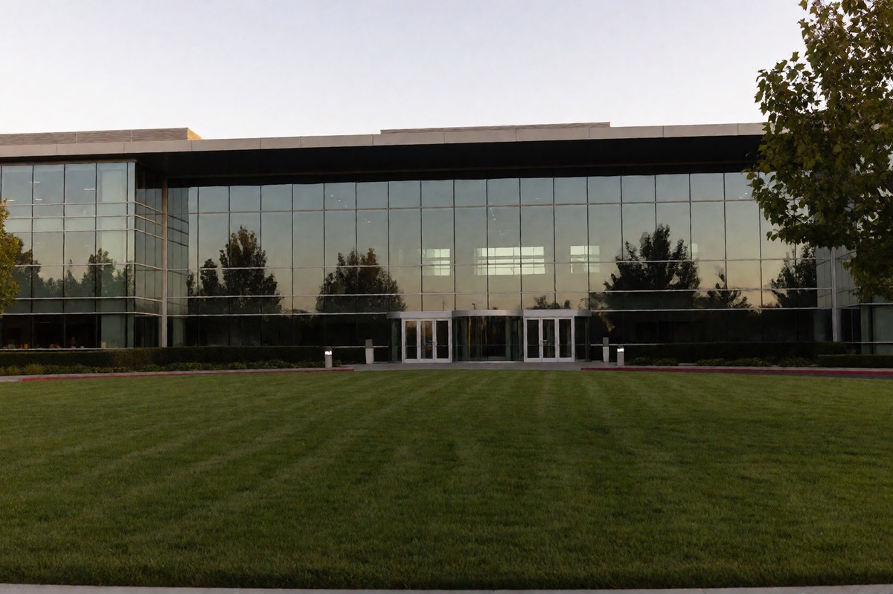

Economia · 23 novembre 2026
Nvidia, Jensen Huang torna alla guida dell'azienda

Il consiglio lo ha reintegrato all'unanimità undici giorni dopo le dimissioni, dicendo di avere consultato il governo americano. Il titolo è volato in Borsa, ma le indagini sulla donna cinese e sull'azienda di Singapore restano aperte.
di Franco Zanghì
Jensen Huang torna a guidare Nvidia, l'azienda dei chip per l'intelligenza artificiale. Lunedì 23 novembre 2026 il consiglio di amministrazione lo ha reintegrato all'unanimità come presidente, amministratore delegato e membro del consiglio. Ma su questa storia resta l'ombra dei servizi segreti cinesi.
Huang è il fondatore di Nvidia, una delle società che valgono di più al mondo. Si era dimesso l'11 novembre, dopo aver ammesso relazioni fuori dal matrimonio. Una di queste, secondo il New York Times, con una donna cinese che le autorità americane sospettano legata allo spionaggio di Pechino. Lo stesso consiglio che adesso lo richiama, ricorda Euronews, in un primo momento aveva escluso il suo ritorno.
Il governo americano nel consiglio
Il consiglio dice di avere sentito i vertici del governo americano: secondo quelle indicazioni il ritorno di Huang non costituisce un rischio per la sicurezza nazionale. Nei giorni precedenti il presidente Donald Trump aveva chiesto pubblicamente una seconda possibilità per lui, definendolo su Truth Social un grande patriota e un tesoro nazionale: un'uscita senza precedenti per un capo di Stato su una vicenda societaria.
Non tutti sono d'accordo. La senatrice democratica Elizabeth Warren ha definito la decisione spericolata. Huang è atteso in audizione pubblica al Senato il 3 dicembre, sui controlli alle esportazioni.
La donna cinese e Megaspeed
Domenica 22 il New York Times, ripreso dalla Reuters, ha scritto che quella donna, ex dirigente di un'azienda di Singapore cliente di Nvidia, sarebbe rimasta in contatto con un funzionario del ministero della Sicurezza di Stato cinese dalla primavera del 2025 a questo autunno. La Cina parla di accuse infondate, e il governo americano non ha concluso che fosse una spia: le indagini restano aperte.
L'azienda si chiama Megaspeed, ha sede a Singapore e secondo Euronews è sotto indagine negli Stati Uniti; su di lei lavorano anche le autorità di Singapore. Secondo il New York Times ha acquistato chip Nvidia per oltre quattro miliardi di dollari, e una parte sarebbe finita in Cina di contrabbando, aggirando i divieti americani. Washington ha appena stretto le regole: da questo mese servono licenze per inviare i chip più avanzati a Singapore, in Malesia e in altri Paesi.
Che cosa ha fatto la Borsa
Il titolo Nvidia è salito di quasi il 32 per cento in una sola seduta, la migliore da oltre vent'anni, con circa mille miliardi di dollari di valore aggiunti. In Europa l'indice Stoxx 600 ha guadagnato l'1,8 per cento, con rimbalzi fra l'8 e il 9 per cento per Asml, Nokia e STMicroelectronics. Il recupero, però, non ha cancellato le perdite: alcuni di quei titoli restano intorno al 9 per cento sotto i livelli precedenti alle dimissioni.
Perché ci riguarda
Perché i chip di Nvidia fanno funzionare l'intelligenza artificiale in tutto il mondo, Europa e Italia comprese, e perché la partita dei chip fra Stati Uniti e Cina decide chi comanderà la tecnologia dei prossimi anni. Come la leggo io: la Casa Bianca ha deciso che una Nvidia senza il suo fondatore era un rischio più grande dei dubbi sulla Cina. Quando un'azienda pesa così tanto, la politica entra anche nel consiglio di amministrazione. Il passaggio da guardare sono le indagini ancora aperte: se diranno che quella donna lavorava davvero per Pechino, il ritorno di Huang tornerà in discussione.
Fonti
- Il Post, «Jensen Huang è di nuovo l'amministratore delegato di Nvidia», 23 novembre 2026
- Euronews Italia, «Nvidia, ritorno di Jensen Huang: rimbalzano ma restano indietro i titoli AI europei», 24 novembre 2026
- Il Sole 24 Ore, «Nvidia, Huang torna a capo del colosso tech. Megaspeed nella lista nera Usa», 23 novembre 2026
- Reuters, sul servizio del New York Times del 22 novembre 2026 relativo ai contatti con un funzionario cinese
- Al Jazeera e PBS NewsHour, 23 novembre 2026
Il nome della donna non viene riportato: non risulta indagata negli Stati Uniti e il governo americano non ha concluso che fosse una spia. Sulla data delle dimissioni le fonti indicano l'11 o il 12 novembre 2026, a seconda che si consideri la seduta di Borsa o l'annuncio. L'inserimento di Megaspeed in una lista nera americana è riportato dal titolo del Sole 24 Ore, il cui testo non è stato consultabile, e non compare nelle altre fonti lette: è indicato qui come indagine in corso. Le cifre di Borsa sono quelle della seduta del 23 novembre e cambiano con il mercato.